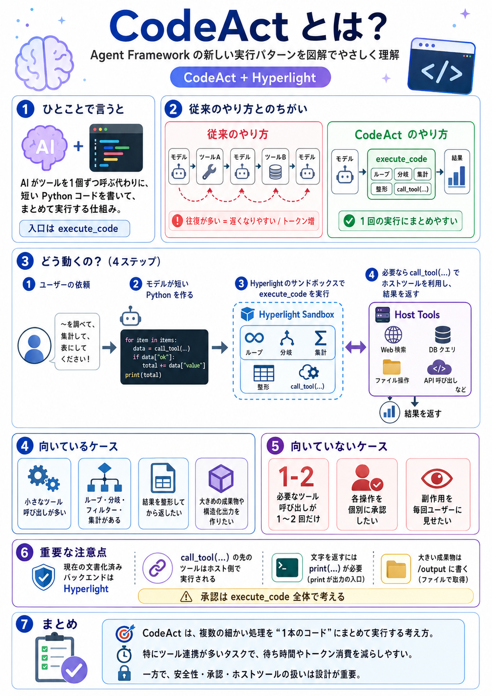

Microsoft Agent Framework
CodeAct / Hyperlight 解説資料

結論: CodeAct は、AI が 「ツールを1個ずつ呼ぶ」代わりに、短い Python プログラムを書いてまとめて実行する考え方です。
Agent Framework ではその入口として execute_code を公開し、現在の文書化済みバックエンドとして
Hyperlight CodeAct が提供されています。特に「小さなツール呼び出しが何回も続く処理」で効果が出やすいのがポイントです。
- 普通のツール呼び出し: モデル → ツール → モデル → ツール… を何回も往復する。
- CodeAct: モデルが 1 回で計画をコード化し、
execute_codeの中でまとめて処理する。 - Hyperlight: そのコードを隔離されたサンドボックスで実行するための現在の実装手段。
1. CodeAct とは何か
普通のエージェント
ステップが細かいほど、待ち時間とトークン消費が増えやすいです。
CodeAct を使うエージェント
execute_code がサンドボックスで 1 回実行するcall_tool(...) でホストツールを呼ぶ複数の小さい処理を、1回の実行に畳み込むのが狙いです。
2. なぜ CodeAct が必要なのか
公式ドキュメントでは、最近のエージェントは モデル自体よりも、ツール呼び出しの往復オーバーヘッド によって遅くなることがあると説明されています。 CodeAct はこの「モデル → ツール → モデル」のループをまとめることで、待ち時間とトークン使用量を減らす狙いです。
Hyperlight CodeAct の説明では、代表的なツール負荷の高いワークロードで、 待機時間をほぼ半分、トークン使用量を 60%以上削減 できる場合があるとされています。 ただし、これは「多くの小さなツール呼び出しが連なる処理」で特に効く話です。
3. Hyperlight との関係
考え方・パターンです。AI が短いコードを書き、それを実行してタスクを進めます。
Agent Framework で現在文書化されている CodeAct のバックエンド実装です。
モデルに見せる入口のツールです。コード実行はこの単一ツールに集約されます。
役割分担の理解
「どう考えるか」
＝複数処理を1本のコードに畳み込む
「どこで実行するか」
＝隔離サンドボックス
「どう組み込むか」
＝
HyperlightCodeActProvider など4. どう動くのか
5. どんな時に向いているか / 向いていないか
向いているケース
向いていないケース
6. 承認と安全性の考え方
ここはかなり重要です。CodeAct では 「何がサンドボックス内で動くか」 と、「何がホスト側で動くか」 を分けて考える必要があります。
call_tool(...) で呼ばれるプロバイダー登録ツールは、
サンドボックス内に再実装されるわけではなく、ホストプロセス側でそのまま実行 されます。
つまり、ホスト側ツールはホストが持つファイル、ネットワーク、資格情報へアクセスできます。
| 置き場所 | 向いているもの | 理由 |
|---|---|---|
HyperlightCodeActProvider(tools=...) |
安価・確定的・安全で、何度も連鎖しやすい処理 | 1 回の execute_code の中で多くの呼び出しをまとめやすい |
Agent(tools=...) |
副作用あり、機密性が高い、個別承認が必要な処理 | 各ツール呼び出しを独立して見せて承認しやすい |
安全な考え方の基本
多数回呼ばれても安全なツール
例: 軽量計算、参照系データ取得
副作用・送信・更新系ツール
例: メール送信、外部更新
高速化と安全性の両立を狙う
7. ファイル・ネットワーク・出力の仕組み
Hyperlight では読み取り専用の /input ツリーを公開できます。workspace_root や
file_mounts でホスト側のファイルを見せます。
成果物は /output/<filename> に書き込みます。返却ファイルとして添付できます。
allowed_domains で送信先を制御できます。特定ドメインやメソッド単位で許可します。
execute_code から文字列を返したい時は print(...) で終わる必要があります。最後の式は自動返却されません。
8. Python 実装パターン
推奨: HyperlightCodeActProvider
実行ごとに CodeAct を自動で追加したい時の推奨入口です。指示と execute_code を自動挿入します。
from agent_framework import Agent
from agent_framework.foundry import FoundryChatClient
from agent_framework.hyperlight import HyperlightCodeActProvider
from azure.identity import AzureCliCredential
codeact = HyperlightCodeActProvider(
tools=[compute, fetch_data],
approval_mode="never_require",
)
agent = Agent(
client=FoundryChatClient(
project_endpoint=os.environ["FOUNDRY_PROJECT_ENDPOINT"],
model=os.environ["FOUNDRY_MODEL"],
credential=AzureCliCredential(),
),
name="HyperlightCodeActProviderAgent",
instructions="You are a helpful assistant.",
context_providers=[codeact],
)
直接配線: HyperlightExecuteCodeTool
固定構成で、execute_code を通常ツールとして直接つなぎたい時に使います。
from agent_framework.hyperlight import HyperlightExecuteCodeTool
execute_code = HyperlightExecuteCodeTool(
tools=[compute],
approval_mode="never_require",
)
codeact_instructions = execute_code.build_instructions(
tools_visible_to_model=False
)
# この instructions は自動挿入されないので、
# エージェント指示へ自分で足す必要があります。
pip install agent-framework-hyperlight --pre
コアとは別パッケージです。Hyperlight サンドボックス部品に依存するため、対応していないプラットフォームでは execute_code
が失敗します。
9. CodeAct と直接ツール呼び出しの比較
| 観点 | 直接ツール呼び出し | CodeAct |
|---|---|---|
| モデルの動き | 1ターンごとに 1 ツールずつ選ぶ | 1ターンで短いコードを書き、まとめて実行する |
| 向く処理 | 単純、少数ツール、副作用確認が必要 | 多数の小さい処理、集計、整形、反復 |
| 承認 | ツールごとに見せやすい | execute_code 単位の承認になりやすい |
| オーバーヘッド | 多段になると増えやすい | 畳み込みにより減らしやすい |
| 設計の難しさ | 比較的単純 | ツール契約、安全境界、出力方式の設計が重要 |
10. 現在の制限
- 現在文書化されている Agent Framework の CodeAct コネクタは Hyperlight CodeAct です。
- 現在の Hyperlight 統合では、実行されるゲストコードは Python です。
- インメモリのインタープリター状態は、別々の
execute_code呼び出し間で保持されません。 - 承認は、同じコードブロック内の個別処理ではなく、全体または
call_tool(...)呼び出し単位で考える必要があります。 - ツールの説明、パラメーター、戻り値の形が、普通のツール呼び出し以上に重要です。
- Hyperlight には仮想化要件があり、Windows では WHP、Linux では KVM が必要です。Wasm バックエンドでは
HYPERLIGHT_PYTHON_GUEST_PATHの設定が必要です。
11. こう考えるとわかりやすい
CodeAct は「超能力」ではない
何でも速くなる魔法ではありません。
効くのは「小さい操作が多い処理」を 1 本のコードにできる時です。
CodeAct は「コード化されたオーケストレーション」
LLM がその場でプログラムを書いて、実行フローを自分で構成する形です。 つまり、単なる Code Interpreter 風機能というより、ツール連携のまとめ役 です。
12. ベストプラクティス
軽量、決定的、何度呼んでも安全なものを置く。危険操作は直接ツールへ。
名前、説明、引数、戻り値の形を曖昧にしない。CodeAct では特に重要です。
文字列で無理に返さず、ファイルとして返す設計に寄せる。
1〜2ツールで済むなら普通のツール呼び出しのほうが素直です。
13. バッドプラクティス
例: 送信、更新、削除。個別承認しにくくなります。
call_tool(...) 先はホスト側実行です。権限境界を誤ると危険です。
Hyperlight は最後の式を自動返却しません。文字を返すなら print(...) が必要です。
別ターンの execute_code 間ではインメモリ状態は保持されません。
14. 初心者向けの採用判断
- その処理は 1〜2 ツールで終わるか？ → はい: まず直接ツール呼び出し。
- 同じターンで小さいツールを何回も呼ぶか？ → はい: CodeAct 候補。
- 副作用や承認が重要か？ → はい: その部分は Agent 直結ツールとして分離。
- ファイルや出力物を作るか？ → はい:
/outputを使う設計にする。 - プラットフォーム条件を満たすか？ → いいえ: まず Hyperlight 利用可否を確認。